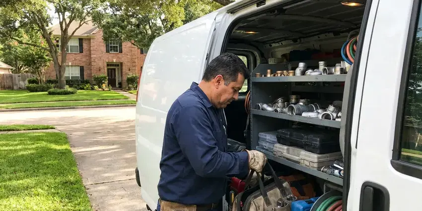

Plumbers for Frozen Pipes in Tanaina, AK
If you're dealing with frozen pipes in Tanaina, AK, our skilled team is ready to diagnose and repair the issue efficiently.
- Fast Frozen Pipe Service
- Burst Pipe Repair
- Burst Pipe Repair
- Prevent Burst Pipes

Need Quick Frozen Pipe Repair in Tanaina, AK?
Our skilled plumbers are ready to address your frozen pipe emergency with speed and precision.
Fast, Careful Plumbers for Frozen Pipes When Cold Nights Hit Tanaina, AK
CKN Plumbing understands the challenges that winter weather brings to plumbing systems in Tanaina, AK. Freezing temperatures, even for a short period, can lead to frozen pipes, which often result in costly bursts and water damage. Homes here commonly use heat tape, insulated chases, and supply lines buried deep below the frost line to keep water moving all winter.
Our expertise includes:
- Burst pipe repair in walls, attics, garages and outdoor runs
- Electric and infrared thawing of copper, PEX and galvanized lines
- Thermal imaging for hidden frozen sections.

Additional Plumbing Maintenance Services in Tanaina, AK
Our maintenance and specialty plumbing services in Tanaina, AK catch small problems before they become emergencies.


Customers
Why Choose CKN Plumbing for Plumbers for Frozen Pipes in Tanaina, AK?
Freezing temperatures, even for a short time, can turn a minor inconvenience into a major plumbing emergency. Our team acts fast to reduce risks and restore your water service safely.
- Damage Prevention, Our preventive advice and services help you fortify your home against future freezing weather conditions.
- Local Knowledge, Our plumbers are familiar with Tanaina's climate and common home construction, which helps us promptly pinpoint and address frozen pipe issues.
- Freeze Proofing, We insulate, add heat cable or reroute vulnerable lines to prevent the next cold snap.
Citywide Coverage
Our freeze response crews cover all of Tanaina, including exposed hillside neighborhoods and rural properties where nights get coldest. We prioritize calls where water is actively leaking.
Experienced Team
Each CKN Plumbing technician is highly skilled and regularly trained on best practices for handling frozen pipes, including identifying vulnerable areas in the plumbing systems common in Tanaina and across Alaska.
Safety-First Approach
All burst pipe repairs are made with code-approved materials and fittings and pressure tested before we leave. If a water heater or gas appliance was affected, we inspect it for safe operation.
Trusted Certified Tanaina Plumbing Services Professionals
At CKN Plumbing, we take pride in providing licensed, certified plumbing services throughout Tanaina, AK. Backed by leading industry credentials, our experienced plumbers combine technical skill with genuine customer care. Whether it is repair, installation, or maintenance, we follow strict safety and quality standards to deliver long-lasting results you can trust.
Call Us Now PHCC Plumbing Contractor Recognition
PHCC Plumbing Contractor Recognition Better Business Bureau (BBB) Accreditation
Better Business Bureau (BBB) Accreditation Angi Certified Pro
Angi Certified Pro ISO 9001 Quality Management Certification
ISO 9001 Quality Management CertificationReliable Plumbers for Frozen Pipes Services in Tanaina, AK
Emergency Burst Pipe Repair in Tanaina, AK
A burst pipe is a true plumbing emergency that requires immediate attention to prevent extensive water damage to your Tanaina, AK home. Our emergency services are available around the clock to respond to burst pipes caused by freezing. We will shut off the main water supply, locate the rupture, and perform a durable repair or replacement, often using push-fit connectors for quick fixes or soldering new sections of Type L copper for long-term solutions. We understand the urgency and move quickly.

Pipe Insulation and Heat Cable Installation in Tanaina, AK
Beyond immediate repairs, CKN Plumbing offers long-term solutions for preventing frozen pipes in Tanaina, AK. We install durable pipe insulation on vulnerable lines in crawl spaces, attics, and exterior walls. For critical or frequently freezing pipes, we can install self-regulating heat cables. These systems provide consistent, gentle warmth, preventing ice formation even during extended periods of freezing temperatures, offering a reliable defense against costly bursts.
Residential Frozen Pipe Thawing in Tanaina
For homeowners in Tanaina, a frozen pipe can be a major headache, frequently leading to a complete loss of water supply or, worse, a burst pipe. Our team uses non-invasive methods, such as controlled heat application or warm water jetting, to safely thaw your residential plumbing. We inspect the entire system, including exposed outdoor spigots and lines in unheated crawl spaces, to make sure all ice blockages are removed without damaging your existing copper, PEX, or PVC pipes.
Water Heater Line Thawing and Repair in Tanaina
The water lines leading to and from your water heater can also freeze, especially if located in an unconditioned space like a garage or utility closet in Tanaina. This can completely stop your hot water supply or damage the heater itself. Our plumbers are skilled at safely thawing these lines, inspecting for any damage to the water heater unit, and confirming proper function is restored. We handle both traditional tank and tankless water heater setups.
Commercial Frozen Pipe Solutions in Tanaina, AK
Businesses in Tanaina, AK cannot afford downtime due to frozen pipes. Our commercial plumbing services address the challenges of larger-scale systems, including fire suppression lines, large diameter water mains, and HVAC condensate lines. We use commercial-grade thawing equipment and are adept at working in commercial environments with minimal disruption. Our goal is to get your business back up and running quickly and safely, preventing financial losses.
Outdoor Faucet and Sprinkler Line Freezing in Tanaina, AK
Outdoor plumbing, like garden hoses connected to spigots and sprinkler systems, is usually the first to freeze in Tanaina, AK. We provide services to thaw these lines and repair any resulting damage, such as cracked spigots or broken sprinkler heads. We also install frost-free sillcocks and advise on correctly draining and blowing out irrigation systems before winter to prevent future issues, protecting your entire outdoor plumbing network.
Preventative Pipe Insulation Services in Tanaina
The best way to deal with frozen pipes is to prevent them. CKN Plumbing provides complete pipe insulation services, focusing on vulnerable areas like outdoor faucets, pipes in unheated basements, crawl spaces, and exterior walls. We use high-quality foam insulation, fiberglass wraps, and sometimes heat tape to protect your pipes from freezing temperatures. This proactive approach can save you from costly repairs and headaches during winter in Tanaina.

Pool, Outdoor Equipment and Water Heater Line Freeze Damage in Tanaina, AK
Pool equipment lines, outdoor kitchen and ice maker supply tubing and water heater connections in garages are all frequent freeze points. Thin copper or plastic tubing in exposed spots splits easily in a hard freeze. We repair these lines and can add shutoff and drain valves so they can be winterized in minutes. If a water heater connection or valve was damaged, we repair it and check the unit.
Plumbers for Frozen Pipes Near Me in Tanaina, AK
When you search for plumbers for frozen pipes near me in Tanaina, you want a fast response and reliable service. CKN Plumbing is positioned to serve all corners of Tanaina, ensuring our team can get to your property quickly. We understand the urgency of frozen pipe emergencies and prioritize fast dispatch.
Our team is positioned to serve all areas of Tanaina and surrounding communities, ensuring that help is always just a phone call away. For dependable and prompt service regarding frozen pipes, CKN Plumbing is the trusted choice for homeowners across Alaska.
CKN Plumbing at a Glance
- Fully licensed plumbing team covering Tanaina, AK
- 24/7 emergency service with same-day scheduling
- Clear written estimates, no hidden fees
- 4.9-star rated by 309+ Alaska customers
Tanaina Map
Tanaina Information
- Population
- 8,817
- Area codes
- Local
- Service area
- Tanaina and communities within 40 miles
- Nearby
- North Lakes, Wasilla, South Lakes, Meadow Lakes
Having a dependable plumber for frozen pipes in Tanaina, AK is crucial for protecting homes from significant water damage and costly repairs when winter weather turns. Homes here commonly use heat tape, insulated chases, and supply lines buried deep below the frost line to keep water moving all winter.
Expert Services
Trust our professionals for reliable CKN Plumbing solutions in Tanaina, AK.
Our Specialized Plumbing Services in Tanaina, AK
At CKN Plumbing, we provide a complete range of plumbing services across Tanaina, AK. From leak detection to full system installations, our team ensures fast, precise, and affordable service for both residential and commercial properties. Explore our core services below:


How Our Plumbers for Frozen Pipes Process Works in Tanaina, AK
We follow a clear, step-by-step approach to resolve your frozen pipe issues with little disruption.
Request a Quote
Call (928) 470-9007 and tell us which fixtures have no water and whether you see any leaks. We give you safety steps to take while we are en route.
Locate and Thaw
We use thermal imaging to find the frozen section and thaw it with flame-free equipment. Faucets stay open so pressure can escape while the ice melts.
Test and Protect
We pressure test the line and repair any splits. Then we insulate or upgrade vulnerable pipes so they are ready for the next cold night.
Frequently Asked Questions About Plumbers for Frozen Pipes in Tanaina
The cost to thaw a frozen pipe in Tanaina, AK can vary significantly depending on the location and accessibility of the pipe, the extent of the freeze, and whether a burst has occurred. Simple thawing might range from $200 to $500, while more complex jobs involving wall access or burst pipe repairs could cost $500 to over $1,500. We provide a clear estimate after a careful assessment.
While any pipe can freeze, older galvanized steel or copper pipes in uninsulated areas are often more susceptible to bursting due to their rigid material. PEX piping is typically more freeze-resistant because it can expand, though it can still freeze and burst under extreme conditions. Our team works with all pipe types.
Ice can split a pipe while frozen, but the leak only appears once the ice melts and water flows again. That is why we pressure test every thawed line. It catches hidden splits before they cause damage.
While no pipe is completely freeze-proof, materials like PEX, or cross-linked polyethylene, are more flexible and less likely to suffer bursting when frozen compared to rigid copper or PVC. We also recommend insulating existing pipes with foam pipe sleeves from brands like Frost King or installing self-regulating heat cables from companies like EasyHeat for added protection.
Usually, simple thawing of frozen pipes does not require a permit in Tanaina, AK. However, if a frozen pipe bursts and requires significant repair or replacement of a section of your plumbing system, a plumbing permit may be necessary. CKN Plumbing will handle all required permitting for you.
You can attempt to thaw an exposed, easily accessible pipe with a hair dryer on a low setting or warm towels. However, never use open flames or high heat, as this can damage pipes or create fire hazards. If the pipe is hidden, already burst, or you're unsure, it's always safer to call a professional plumber to prevent further damage.
Minor thawing and simple pipe repairs usually do not require a permit in Tanaina. However, if the repair involves significant re-piping, altering the main water line, or work on gas lines tied to water heaters, a plumbing permit may be necessary. Our team handles all required permitting for you.
Disconnect hoses, cover outdoor faucets and backflow preventers, and let a faucet drip on exterior walls during hard freezes. Insulating attic, crawl space and garage lines helps most. We can install insulation, heat cable or reroute vulnerable pipes.
What People Are Saying About Our Plumbing Experts?

Mark T.
When our office needed drain cleaning, CKN Plumbing provided quick, reliable service. The plumber arrived on time and made sure every drain flowed perfectly before leaving. Very satisfied.
Drain Cleaning · Fishhook, AK
Robert G.
The trenchless sewer replacement saved our front yard. They walked us through the camera inspection footage first so we knew exactly what we were paying for.
Sewer Line Replacement · Fishhook, AK
Laura S.
I scheduled a water heater replacement, and the team made the process smooth and affordable. The new unit works perfectly, and they cleaned up after completing the job.
Water Heater Replacement · Fishhook, AK
Daniel K.
A pipe burst at 11 pm and they actually answered. The plumber showed up within the hour, shut everything down, and had us back to normal the next morning. Could not ask for more.
Emergency Plumbing · North Lakes, AK
Emily R.
I called CKN Plumbing for plumbing repair, and the technician was fast, polite, and thorough. They explained the problem clearly and fixed it the same day. I will definitely hire them again. Highly recommended!
Plumbing Repair · South Lakes, AKJames P.
Our commercial plumbing system had a leak under the sink, and CKN Plumbing handled it professionally. The plumbers arrived quickly and restored everything without disruption to our customers.
Commercial Plumbing · South Lakes, AK